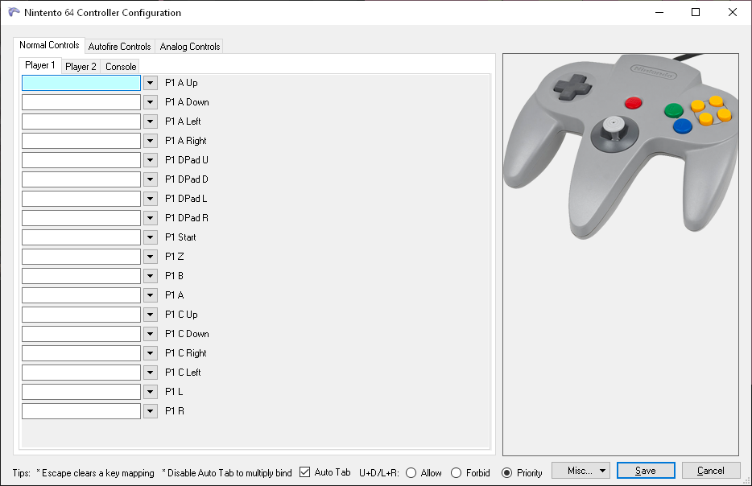

|
|
Artigos
/ inputdisplay
(BizHawk, Input Display)
Last Update: 17/11/2025
Download e explicação do meu Input Display para BizHawk.
inputdisplay.7z
InputDisplay
O exemplo usado aqui é o Nintendo 64, mas a lógica funciona para qualquer
sistema suportado pelo BizHawk.
Cada console possui o seu próprio layout de botões, e em algumas versões do
BizHawk esses nomes internos podem mudar.
Por isso, às vezes é necessário ajustar manualmente o script para cada
sistema.
while emu.getsystemid() == "N64" do
Aqui você define para qual sistema o script vai rodar.
O arquivo config.ini mostra todos os sistemas suportados pelo BizHawk.
Alguns exemplos:
Nintendo 64, "N64"
PlayStation 1, "PSX"
Mega Drive, "GEN"
MAME, "Arcade"
Super Nintendo, "SNES"
3DO, "3DO"
client.SetGameExtraPadding(0, 0, 1500, 400)
-- ESQUERDA, CIMA, DIREITA, BAIXO
Esse comando cria área extra ao redor da gameplay, dentro da janela do
emulador. No exemplo:
0000, nada à esquerda
0000, nada acima
1500, adiciona 1500 pixels à direita
0400, adiciona 400 pixels abaixo
Esse espaço serve como uma área onde você pode desenhar seu HUD,
InputDisplay, imagens, textos etc., sem interferir no gameplay. É possível
desenhar coisas por cima da tela do jogo, mas eu prefiro deixar separado.
gui.drawImage("fundo_mega_MK3.png", 800, 0)
Isso insere uma imagem no Emulador nas coordenadas:
X = 800
Y = 0
Como o fundo do BizHawk é preto, eu adiciono uma cor neutra e o mapa dos
botões para facilitar a edição posterior no Premiere.
local Joypad = (movie.mode() == "PLAY")
and movie.getinput(emu.framecount() - 1)
or joypad.getimmediate()
Se estiver rodando um MOVIE, ele captura os inputs gravados frame a frame.
Se estiver jogando ao vivo, pega os inputs em tempo real.
-- DIRECIONAL (com diagonais)
local function drawDpad(p, x, y)
local U = Joypad[p .. " A Up"]
local D = Joypad[p .. " A Down"]
local L = Joypad[p .. " A Left"]
local R = Joypad[p .. " A Right"]
Aqui ele lê os botões do direcional do Emulador.
p = o jogador ("P1" ou "P2")
" A Up" = nome do botão
.. = concatenação
"P1 A Up" = chave usada pelo BizHawk para acessar o botão
Ou seja:
Joypad[p .. " A Up"]
Joypad["P1 A Up"]
True/False dependendo do estado do botão

drawDpad("P1", 800, 0)
drawButtons("P1", 1205, 9)
A variável p é substituída por "P1" ou
"P2", e você define as coordenadas X e Y
para desenhar tudo na posição correta.
Representação simples:
+-----------------------+
+------------------------------+
| GAMEPLAY -------------|---800px---|-fundo_mega_MK3.png
|
|-----------------------|---800px---|-d-pad_snes-5.png
|
|-----------------------|---1205px--|--------------------MK_X.png |
|
| |
|
|
| |
|
+-----------------------+
+------------------------------+
local function drawButtons(p, x, y)
local map = {
["B"] = {"MK_X.png", 0, 0 },
["A"] = {"MK_A.png", 0, 107},
["C Up"] = {"MK_Z.png", 344, 0 },
["C Right"] = {"MK_C.png", 344, 107},
["R"] = {"MK_Y.png", 162, 0 },
["L"] = {"MK_B.png", 162, 107},
}
Cada entrada da tabela é:
["NOME DO BOTAO"] = {"arquivo.png", x_offset, y_offset}.
Para usar outros sistemas, basta trocar o nome do botão e a imagem.
Para cada direção você precisa de:
neutro
direções simples
diagonais
Se for usar as suas próprias imagens, basta renomear e criar uma versão
correspondente para cada direção como no exemplo abaixo:

Exemplo:
https://youtu.be/QEOLnhWOtOE
ScrollingInput
scrollinginput.7z
(...)
Exemplo:
https://youtu.be/naeDirNjVd8
|
|